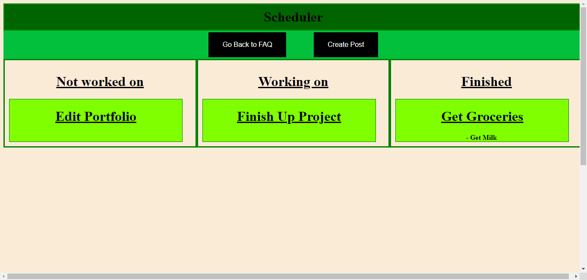
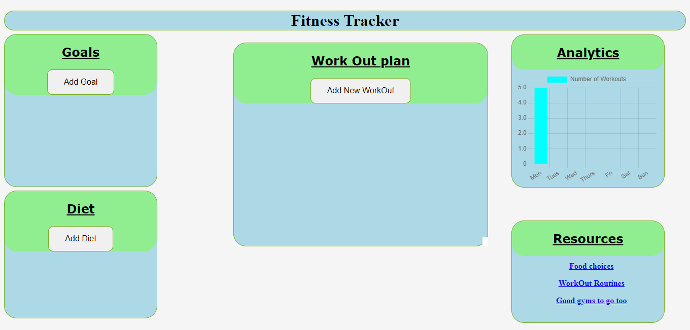
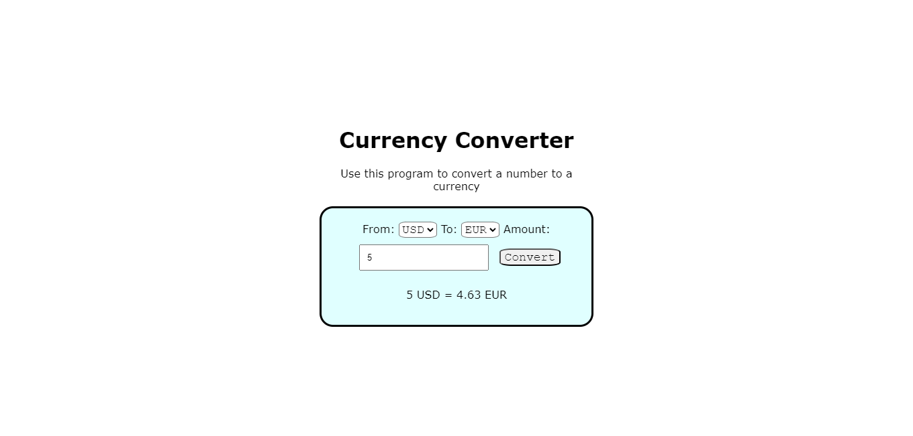

About Me
Recent computer science and information systems graduate with a strong foundation in web development and a passion for
creating dynamic and user-friendly websites. Proficient in HTML, CSS, JavaScript, and front-end frameworks like React, coupled
with a solid understanding of back-end technologies such as Node.js and Express. Skilled in designing responsive layouts.
Committed to staying up-to-date with the latest industry trends and continuously enhancing coding skills to deliver innovative
and impactful web solutions.
Projects
To-do list Application
Developed a dynamic To-do List application using JavaScript and jQuery,
enhancing proficiency in front-end web development technique
Designed and implemented a user-friendly Help screen to assist new users
in navigating the application, improving user onboarding experience.
Created solid functionality allowing users to create, edit, and delete
posts, empowering efficient task management
Integrated drag-and-drop functionality, enabling users to intuitively
categorize tasks into "Incomplete", "Working On", and "Finished"
sections, enhancing task organization and prioritization.


Workout Tracker
Developed a comprehensive fitness management application as the Senior
Capstone Project, utilizing React.js and Node.js, showcasing proficiency
in web development
Engineered a user-centric platform enabling users to set personalized
fitness goals, fostering motivation and accountability within the gym
environment
Designed and implemented an intuitive diet planning feature, allowing
users to create customized meal plans and effortlessly track caloric
intake, promoting a holistic approach to health management
Crafted an in-depth workout planning module, offering users the ability
to design and monitor workout routines by tracking reps and sets,
resulting in enhanced exercise precision and progression.
Currency Converter
Independently developed a Currency Converter application using basic JavaScript, demonstrating strong foundational
programming skills and problem-solving abilities.
Implemented a user-friendly interface enabling users to input numeric values and seamlessly convert them into various
currencies, showcasing a user-centric design approach.
Utilized JavaScript's built-in functionalities to accurately perform currency conversion calculations, ensuring accurate
and reliable results for users.
Showcased coding proficiency by efficiently handling user inputs and displaying converted currency values in real-time,
enhancing the overall user experience.
Utilized effective time management and self-directed learning in the creation of a practical and functional Currency
Converter tool.
